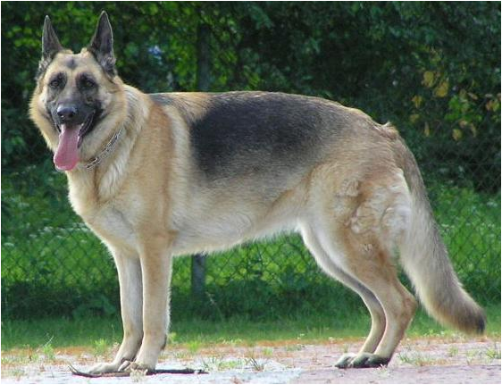
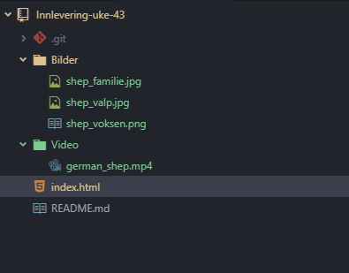

Internett er et nettverk av nettverk. For at de forskjellige datamaskinene skal kunne bli koblet sammen må de bruke de samme «spille reglene» disse reglene kalles protokoller. Uten disse reglene kan ikke maskinene forstå hverandre.
For å få et internett så må vi ha flere nettverk. Definasjonen på et nettverk er minimum 2 maskiner som er kobblet sammen. Når vi så kobler flere slike nettverk sammen, vil vi få internett.
I internettet finnes det forskjellige typer brukere. Det fins klienter som er de som bruker nettet. Også har du tjenere. Det er de som har informasjonen til nettsidene du ønsker å besøke. Vi har også noe som heter dns tjenere. Disse tjenerne lagrer informasjonen om hvordan man skal kobble seg til de andre tjenerene når vi skal for eksempel gå på facebook. De tar imot informasjonen du sender inn «facebook.com» også sender den tilbake ip addressen til denne serveren. Slik at du kan koble deg til denne serveren. Den har også litt informasjon om hva slags kode språk nettsiden bruker.
IP står for Internettprotokollen og på engelsk Internet Protocol. Alle maskinene som er koblet til internettet har en unik IP adresse. Denne andressen blir brukt sånn at maskinene på internettet/netverket vet hvor informasjonen skal og hvem den kommer ifra. Hvis du prøver å gå på en nettside som for eksempel "www.aschehoug.no" vil den bli slått opp av en DNS-server. Denne serveren finner ip addressen til nettsiden å sender den til deg slik at du ikke trenger å huske på lange ip addresser når du skal på nettsider.
Når vi setter opp en tjener på vår egen datamaskin får vi det som kalles localhost. Da fungere maskinen som både tjener og klient. Dette gjør vi fordi mye av koden vi kommer til å skrive krever en tjener for å vise utfallet av koden, PHP er et eksempel på dette. IP-addressen til localhost er 127.0.0.1 eller bare localhost i noen nettlesere.
I tillegg har vi noe som heter TCP. Dette er en protokoll som sier hvordan informasjonen mellom klienter og tjenere skal bli håndtert og sendt. For når klienter og tjenere snakker sammen blir det sendt pakker mellom dem. Er det snakk om mye informasjon vil pakkene som regel bli delt opp i flere mindre pakker. Da må alle pakkene inneholde informasjonen om hvordan de skal bli satt sammen igjen når de kommer tilbake til klienten. Slik at klienten kan få opp nettsiden og dens innhold på riktig måte.
Hypertext Transfer Protocol som også står for HTTP. HTTP sørger for at the World Wide Web fungerer. Denne protokollen blir brukt av nettlesere og tjenere slik at de har muligheten til å forstå hverandre. Når vi skriver inn en nettside i nettleseren så vil nettlesern koble seg til tjeneren og sende en HTTP forespørsel. informasjonen i denne forespørselen er informasjon om hva klienten ønsker å få tilgang til. Da sender nettleseren en "GET HTTP" request. Serveren vil så svare med hva slags program den er hostet med og hvilken versjon det er. samt alt annet på nettsiden. Hvis nettsiden ikke finnes vil nettleseren få tilbake en 404 error, som betyr at nettsiden ikke finnes eller ikke ble funnet. "page not found".
Top 3 farger
Noen fag jeg liker
| Navn | Type | Terningkast |
|---|---|---|
| The Hunger Games | Action/Sci-Fi | 5 |
| The Maze Runner | Action/Sci-Fi | 6 |
| Avatar | Action/Sci-Fi | 6 |
Noen bilder av Schæfere
 Morsomme klipps av Schæfere